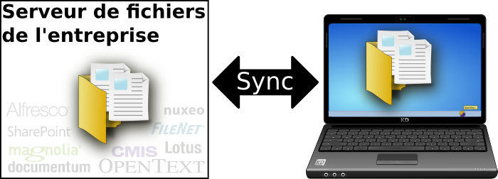
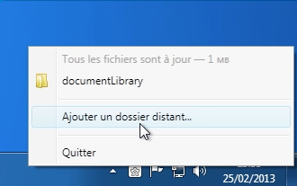
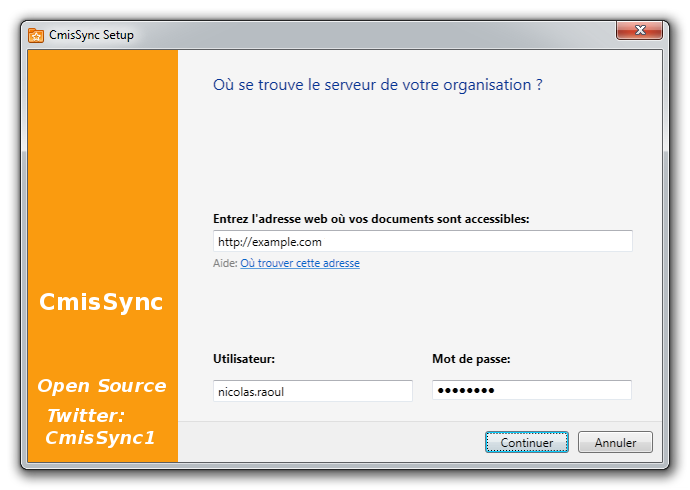

CmisSync vous permet de rester synchronisé avec votre serveur de fichiers, et lire/modifier vos documents même sans connexion Internet:

Besoin de lire un compte-rendu dans l'avion ?
Besoin de vérifier la liste des prix, et pas d'Internet dans la salle de réunion chez le client ?
→ Pas de problème, les derniers fichiers sont déjà sur votre laptop.
Bonus: Vos documents s'ouvre plus vite, pas de latence réseau.
C'est comme un Dropbox pour la GED (Gestion électronique des documents) !
- Vous avez un serveur de fichiers, utilisez-le. Duplication=cauchemar de versions.
- Dropbox est très cher pour les gros volumes.
- Ne confiez pas vos données à des tiers.
→Télécharger← (Disponible sur Windows 7/8. Vista, Mac, Linux en cours de portage)
(.NET Framework 4.5 nécessaire)
Fonctionnalités
- Synchronisation dans les deux sens
- Gestion des éventuels conflits
- Facile à installer
- Compatible avec n'importe quel serveur respectant le standard CMIS
- Logiciel libre
Captures d'écran
 
Tutoriels
CmisSync fonctionne avec n'importe quel serveur compatible CMIS, mais nous ces tutoriels vous guideront pour les serveurs les plus répandus:
- Synchronisation avec Alfresco
- Synchronisation avec Nuxeo
- Synchronisation avec SharePoint
- Synchronisation avec Google Drive
CmisSync est open source !
CmisSync est un logiciel libre, sous licence GNU-GPLv3. Vous pouvez le modifier et redistribuer, lire the license pour plus de détails.
CmisSync est principalement développé par Aegif, mais tous les volontaires sont bienvenus !
Vous pouvez aider:
Testeurs: Installez CmisSync et signalez-nous les bugs,
Developpeurs: Téléchargez le code source et résolvez les bugs, merci beaucoup !
Tout le monde: Traduisez CmisSync en français et dans les langues que vous connaissez. CmisSync est disponible en anglais, français, espagnol, japonais, klingon, néerlandais, ukrainien, tchèque.
À propos de CMIS
CMIS (Content Management Interoperability Services) est un standard OASIS qui permet de communiquer avec n'importe quel serveur GED (Gestion Électronique de Documents) ou ECM (gestion de contenu en général, archives, records management). C'est un peu comme HTML qui permet à votre navigateur web de fonctionner avec n'importe quel serveur web.
CMIS est soutenu par tous les acteurs du marché, en particulier:
Alfresco,
Adobe Experience Manager,
EMC Documentum,
IBM FileNet,
IBM Lotus,
eXo Platform,
Interwoven,
KnowledgeTree,
Magnolia,
Microsoft SharePoint,
NemakiWare,
Nuxeo,
OpenText
et beaucoup d'autres.